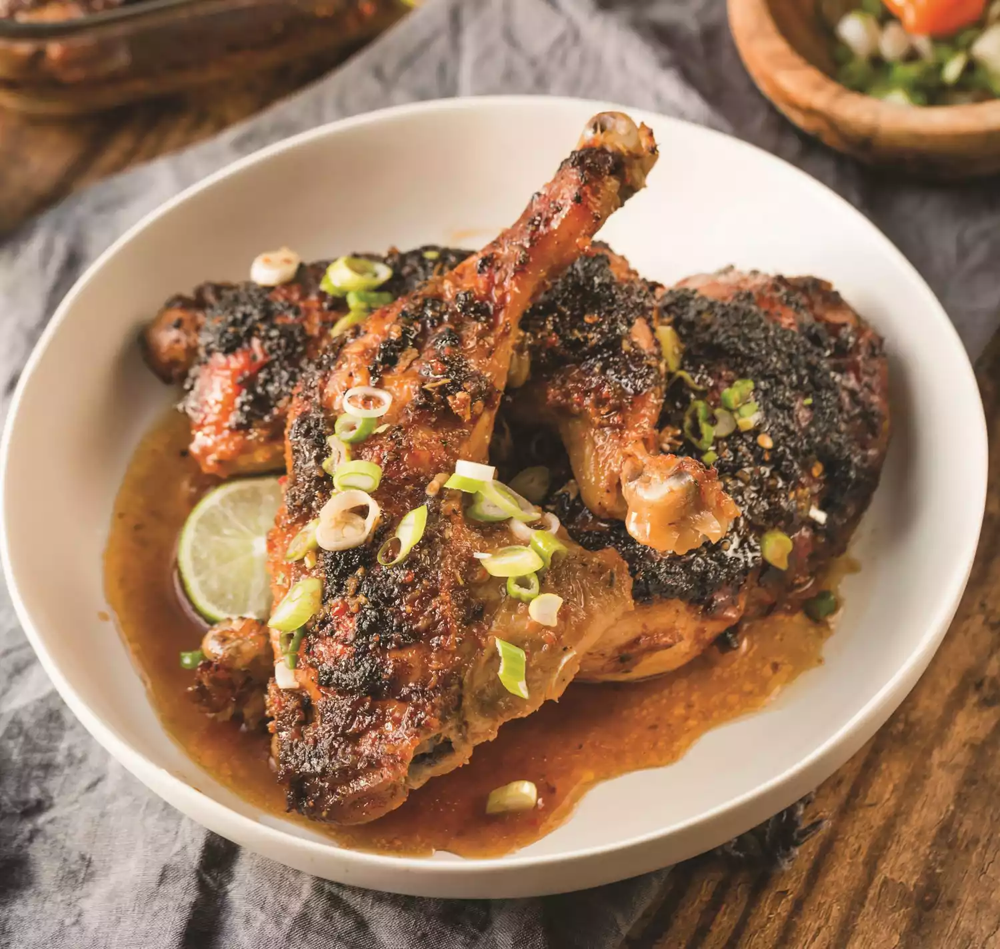

Jamaican Jerk Chicken

Give holiday meals a little "island energy" with this delicious jerk chicken recipe! And discover why this traditional Jamaican dish truly completes any holiday feast.
Jamaican Jerk Chicken is a staple for most Jamaicans. Whether out on the street or at your dining table. The herbs and spices have a flavour like no other. This is one of the best meals any person could eat, for a finger licking experience. The succulent chicken with the smokey char is a delightful treat that will have everyone coming back for more.
Ingredients
- 1 medium yellow onion, chopped
- 5 green onions, chopped, plus more for garnish
- 5 large whole garlic cloves
- 7 sprigs of fresh thyme, stemmed
- 3 tablespoons store-bought browning sauce
- 1 scotch bonnet pepper or jalapeño pepper if you want it more mild
- Zest and juice from 1 small lime, plus sliced lime for garnish
- 2 tablespoons brown sugar
- 2 teaspoons kosher salt
- 2 teaspoons paprika
- 2 teaspoons ground allspice
- 1 teaspoon ground black pepper
- ½ teaspoon ground nutmeg
- ½ teaspoon grated fresh ginger
- 4 to 5 pounds chicken quarters, cleaned
- Vegetable oil, for greasing
Steps
-
In a blender or food processor, add all of the ingredients for the jerk marinade and blend until everything is well mixed.
-
Toss the chicken into a large ziplock freezer bag, then pour in the marinade. Close the bag and move the chicken around to make sure it's well coated with the marinade. Let the chicken marinate in the refrigerator overnight or for a minimum of 6 hours.
-
Once the chicken is good to go, preheat the oven to 375 degrees F. Place the chicken in a lightly oiled 9-by-13-inch baking dish. Bake in the oven, uncovered, for 1 hour and 15 minutes. Remove the chicken from the oven, and let cool. Garnish with lime and green onion before serving.